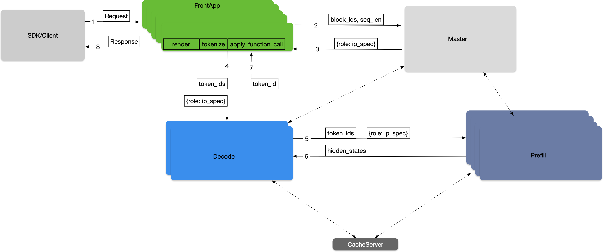

FlexLB（弹性负载均衡器）- 主节点#
背景#
FlexLB（弹性负载均衡器）是 RTP-LLM 分布式推理框架中的主节点角色。它为大模型推理实现了多维服务质量（QoS）负载均衡策略，协调推理工作节点、缓存服务器等组件。
主节点角色旨在解决随机负载均衡导致的机器间负载不均问题，提升 100-1000 节点规模的推理工作集群资源利用率。
系统架构#

核心组件#
SDK/客户端：大模型流量核心入口
请求协议解析与流量监控
基于策略的加权轮询集群选择
负载均衡调度器（主节点）：
采用主从架构的分布式负载均衡器
高可用实时调度决策
基于节点指标（GPU利用率、内存使用、队列长度）的动态负载均衡
集成 Prometheus/Grafana 监控的状态感知路由
前端应用集群：
独立部署的前置填充集群前端功能
处理请求渲染与分词
前置填充集群：
处理初始输入序列的并行计算任务
解码器集群：
处理后续生成步骤的并行推理任务
缓存服务器：
支持前缀感知路由的分布式键值存储系统
负载均衡策略#
主节点针对前置填充和解码操作实施不同的负载均衡策略，以优化资源利用率和请求延迟：
前置填充策略#
对于前置填充请求，主节点基于以下因素选择最优节点：
跨机器的键值缓存命中率
请求的预估执行时间
队列等待时间
该策略通过选择能最高效处理请求的节点，旨在最小化整体请求完成时间
解码策略#
对于解码请求，主节点采用不同策略：
选择键值缓存使用最少的节点
该策略有助于在可用节点间均匀分配解码负载
防止因键值缓存过度消耗导致单节点瓶颈
这些策略协同工作，确保整个推理流水线实现最优资源利用和低延迟。
使用方式#
在 RTP-LLM 部署中使用 FlexLB 主节点：
配置主节点的集群参数
集成 Prometheus/Grafana 监控实现状态感知路由
部署前端应用、前置填充和解码器集群
配置 SDK/客户端使用加权轮询进行集群选择
主节点自动处理负载分配、前缀感知路由和故障转移场景，优化资源利用率并降低请求延迟。
启动命令#
1. Build FlexLB#
从项目根目录进入 FlexLB 模块目录：
cd rtp_llm/flexlb
运行单元测试#
mvn -B test \
-Dmaven.test.failure.ignore=true \
-Derror-prone.skip=true \
-Dautoconfig.skip=true \
-T 1C
构建安装包#
mvn clean package -DskipTests -T 1C
2. Docker Image Build#
准备 Docker 构建上下文#
构建完成后，将生成的 ai-whale.tgz 复制到 Docker 构建上下文目录：
# Check build artifacts
ls -la flexlb-api/target/
# Copy to Docker build context
cp flexlb-api/target/ai-whale.tgz APP-META/docker-config/ai-whale.tgz
构建 Docker 镜像#
基础镜像构建：
docker build ./ -f rtp_llm/flexlb/APP-META/docker-config/Dockerfile_base \
-t xx_docs.com/rtp_llm_flexlb_base
生产环境镜像构建：
docker build ./ -f rtp_llm/flexlb/APP-META/docker-config/Dockerfile_production \
-t xx_docs.com/flexlb:latest
3. Run FlexLB#
使用构建的 Docker 镜像启动 FlexLB 服务：
docker run -d \
--name flexlb-master \
-p 8080:8080 \
xx_docs.com/flexlb:latest
4. Complete Build Script#
以下是完整的构建部署脚本示例：
#!/bin/bash
echo "=== FlexLB Build and Deploy Script ==="
# Navigate to FlexLB directory
cd rtp_llm/flexlb
echo "=== Step 1: Running Unit Tests ==="
mvn -B test \
-Dmaven.test.failure.ignore=true \
-Derror-prone.
s=true \
-Dautoconfig.skip=true \
-T 1C
echo "=== Step 2: Building Package ==="
mvn clean package -DskipTests -T 1C
echo "=== Step 3: Preparing Docker Build Context ==="
if [ -f flexlb-api/target/ai-whale.tgz ]; then
echo "Copying ai-whale.tgz to Docker build context"
cp flexlb-api/target/ai-whale.tgz APP-META/docker-config/ai-whale.tgz
echo "Successfully copied ai-whale.tgz"
else
echo "Error: ai-whale.tgz file not found"
exit 1
fi
echo "=== Step 4: Building Docker Images ==="
# Build base image
docker build ./ -f APP-META/docker-config/Dockerfile_base \
-t xx_docs.com/rtp_llm_flexlb_base
# Build production image
docker build ./ -f APP-META/docker-config/Dockerfile_production \
-t xx_docs.com/flexlb:latest
echo "=== FlexLB Build Complete ==="